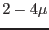

XMM-Newton Science Analysis System
epframes (epframes-8.109.1) [xmmsas_20170112_1337-16.0.0]
Housekeeping related keywords
The task also issues a number of housekeeping related messages and values
and also writes several keywords to the EXPOSURE extension (the information
is usually CCD-dependent and it is thus important that it is
kept and propagated through
the event file processing chain).
The messages appear for verbosities of 4
(recommended value for normal processing) and higher, either specified via
e.g. environment variable SAS_VERBOSITY=4 or task parameter ``-V 4".
The keywords are written to the event file regardlessly the verbosity,
of course.
- Filter: the filter wheel position is derived from the position sensor
potentiometer (housekeeping column F1122 contained in the main periodic
housekeeping file PNPMH1, HK mnemonic H_CE_FWSPOT).
From the fixed positions (CLOSED, THIN1, THIN2, MEDIUM, THICK, OPEN,
approximately separated by 60 degrees)
the corresponding calibration positions (e.g. CALCLOSED)
are obtained by turning the filter wheel back by about 5 degrees.
Verbosity of 4 (or higher) gives the minimum and maximum of this
housekeeping parameter during the exposure time and the avarage
value together with the translated filter name. These are written
to the keywords F1122MIN, F1122MAX, F1122AVE,
respectively.
- High Voltage: V_VC_UHVx, x = 0..3 (quadrant number),
columns F1198, F1199, F1200, F1201,
typical values are -162.4, -163.1, -151.5, -161.5 [V], respectively.
Keywords written: UHV_MIN, UHV_MAX, UHV_AVE.
- CCD temperature: H_CE_TTMPFPF, column F1128,
typical value -89.97 [
 C],
keywords F1128MIN, F1128MAX, F1128AVE
C],
keywords F1128MIN, F1128MAX, F1128AVE
- Quadrant box temperature: E_Cx_TEMPQB1, x = 0..3 (quadrant number),
columns F1576, F1676, F1776, F1876
in the auxiliary HK file PNPAH1, respectively.
The typical values depend on the instrument mode.
Deviations by several degrees
from the average value (e.g. if one or two RGS
instruments are switched off) indicate that the energy correction
may be incomplete later because these gain-temperature-effects need recalibration
at the moment. For CCD 4 (whole quadrant 1) typical values are
20.8, 20.8, 20.9, 21.0, 22.7, 21.3 [C] for
FF, eFF, LW, SW, TI, BU modes, respectively. Keywords are
TQB1_MIN, TQB1_MAX, TQB1_AVE
- Guard ring current: E_Cx_IGRAy, x = 0..3 (quadrant number),
y = 0..2 (CCD ID), PNPAH1 column numbers 1571+CCDID+100*Quadrant,
keywords IGRA_MIN, IGRA_MAX,IGRA_AVE, there
is considerable scatter due to rough digitization (A),
values slightly temperature dependent
- BadPixelTable code: starting in revolution 293 a unique code identifying
the uploaded bad pixel table (column offsets and bad pixels) was put
into the HK telemetry, keyword BPT_CODE. This code
will also be in the header of the corresponding CCF files
ADUCONV and BADPIX (none yet as there was no change of these files
since then at the time of writing). It provides an independent check
whether the correct ADUCONV and BADPIX calibration files are used.
- Offset map calculation: before each exposure an offset map is
calculated onboard using the filter and mode of the subsequent
science exposure. The calculation is performed for all quadrants
simultaneously, first all central CCDs, then the middle CCDs, and then
the outer CCDs of each quadrant. The involved parameters are written
to keywords of the form OT_*. As only a small fraction of the calculated
offset maps is transmitted to ground these quantities may serve as a
tool if problems with the offset map calculation are suspected.
- The filter used during offset map computation is written to extensions
EVENTS and EXPOSURE as keyword OTFILTER.
The default is that it is the same as FILTER.
- An almost complete list of available HK columns can be obtained from
the XMM technical note ``XMM-SOC-TN-0040-SSD'' ([2])
XMM-Newton SOC/SSC -- 2017-01-12